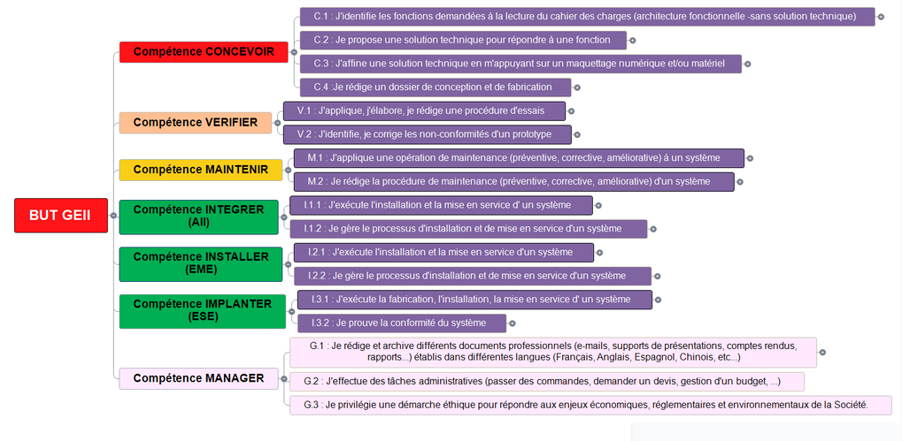

Référentiel & Compétences du BUT GEII
En tant qu'étudiant à l'IUT de Bordeaux (site de Gradignan), mon parcours Portfolio est régi par un référentiel simplifié, axé sur l'acquisition de compétences de base concrètes à valider à l'aide de preuves durant les 6 semestres.
Évolution du Système de Compétences
Le modèle d'évaluation a évolué vers une approche directe et concrète, centrée sur la validation de nos savoir-faire techniques et professionnels.
De plus, une compétence supplémentaire a été ajoutée aux 4 compétences d'origine pour valoriser pleinement nos aptitudes à piloter et mener à bien un projet complexe. Cette 5ème compétence est nommée MANAGER dans notre Portfolio ; une dimension essentielle qui prendra tout son sens lors de mes futurs stages ou périodes d'alternance.
Voici l'ensemble des axes du référentiel :
- CONCEVOIR : Étude technique et schématisation de solutions.
- VÉRIFIER : Mesures, tests de conformité et validation.
- MAINTENIR : Suivi, dépannage et sûreté de fonctionnement.
- INTÉGRER : Déploiement de systèmes (Énergie, Automatismes, Embarqué).
- MANAGER : Gestion de projet, d'équipe, de budget et communication technique.
État d'avancement de mon Portfolio
À ce stade de ma formation (Semestre 1 & 2), je valide actuellement 2 compétences sur les 5 attendues en fin de cursus grâce à mes premières briques de projets de groupe.
Validations ciblées en priorité : CONCEVOIR & VÉRIFIER (via les projets Rafale Lumineux et Thermomètre de Bain).
Graphe du Référentiel GEII Bordeaux-Gradignan

Détail des matières enseigné
- Anglais : Communication internationale, rédaction de documentations techniques, présentations orales de projets et étude de fiches composants (datasheets).
- Maths TD/TP : Traitement de données (Excel, MATLAB), calculs de circuits (complexes, matrices), transformées pour le traitement du signal et modélisation de systèmes.
- Automatisme TD/TP : Programmation d'automates programmables industriels (API) sur TIA Portal, modélisation de systèmes (Grafcet, Ladder, GEMMA) et contrôle de bras robotisés.
- Énergie TD/TP : Étude et déploiement de systèmes électriques (courant monophasé et triphasé), câblage sur WinRelais, gestion de moteurs, habilitation électrique et distribution d'énergie.
- Électronique TD/TP : Saisie de schémas et routage de cartes de circuits imprimés (PCB) sur Proteus (ISIS/ARES), câblage sur platine d'essai, prototypage et soudure de composants.
- Informatique TD/TP : Développement de programmes en langage C ou C++, programmation de microcontrôleurs (Arduino, STM32) et gestion d'entrées/sorties pour les systèmes embarqués.
- Physique : Analyse de circuits en régime transitoire et sinusoïdal, utilisation des appareils de mesure (oscilloscope, multimètre) et étude des capteurs (température, luminosité).
- Culture Communication : Rédaction de dossiers de synthèse professionnelle (DDC, DDV, DDF), conduite de réunions, gestion de projets en équipe et préparation aux soutenances.
Automatisme TP
Logiciels : TIA Portal V18.
Pratique : Machine autonome, programmation de bras robot.
Méthodes : Grafcet, Ladder, GEMMA.
Énergie TP
Pratique : Utilisation de maquettes (triphasé, monophasé).
Outils : Logiciel Winrelais.
Certification : Habilitation électrique.
Maths TP
Outils : Excel, traitement de formules.